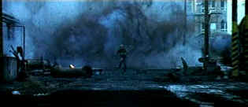

| Behind Enemy Lines (SE)/ B-, A |
| Fox/2001/105/ANA 2.35 |
After deciding to turn in his Navy
commission, Lt. Chris Burnett gets stuck on a holiday mission over war
shattered Bosnia. Navigator Burnett and pilot Stackhouse take off from the
aircraft carrier on the routine mission, but Burnett's affinity for
bending the book gets them into deep trouble.
Burnett winds up in the middle of a forest crawling
with hostiles. His commander has to get him home. The Bosnians want to
eradicate him. What's a guy to do? See Burnett run. Run, Burnett,
run. That's a lot of the plot. Burnett has to run through a trip-wired
minefield, he has to high foot it through multiple barrages of bullets,
through open fields and between the trees. This is one running movie. The
lone assassin is one cool trigger man, relentless in pursuit.
 |
|
Run, Burnett, Run. ©Fox
|
Owen Wilson is the fleet-footed Burnett. Think about
the rapid rise of Owen Wilson in the film world: A couple of years a go he
was co-star and co-author of a little Indie film Bottle Rocket
and now he's running around playing soldier, avoiding rockets, in a major
Hollywood action flick, not to mention an assortment of comic excursions
from Meet
the Parents to Zoolander.
Wilson's flying high, but he has yet to prove he can deliver a serious
performance. He's adequate as Burnett, but he's just a running man. At
least he gets Gene Hackman for his commander. Hackman can be such a
convincing actor. When Hackman's Admiral Leslie Reigart laces into
Burnett, you have no doubts about his conviction. He's not a static actor.
You can read behind they eyes. He's a thinking actor. But Behind
Enemy Lines isn't much about acting or thinking. Hackman's Reigart
never shows the same fire as that initial confrontation, and Wilson,
charming as always, merely is on hand to exercise his running chops.
Director John Moore is more than capable of delivering
a variety of pyrotechnics with explosive effectiveness. The production
elements are first rate. Cinematography is excellent with some
effective lighting choices. The blue lighting in the carrier control room
sequences adds nice ambiance. The SAM attack is delivered with maximum
excitement through fine editing. Man, dig those evasive maneuvers. The
film fails short, however, by failing to maintain a heart-quickening pace.
In fact, the flick's engine grinds to stop and go mode as it nears the end
rather than letting it all hang out.
Behind Enemy Lines is often breathtaking in
its visual beauty and thundering sound. The color is lush and accurate.
The color space is well controlled with excellent color depth. Check
out the detail and color combination of the insignia that the pilot's wear
for some reference viewing. Very nice range of flesh tones. Detail is
consistently fully resolved. It's a very handsome transfer. Black levels
and shadow detail are well handled. Very three-dimensional look. There's
no hint of edginess despite the excellent sharpness. This is reference
territory all right. DTS surround sound is very open. This is one
aggressive encoding job. It effectively transforms the home theater into a
battle zone. The side to side and front to rear pans during the SAM attack
are terrific. There's some tight bass thwomping.
Fox has packaged Behind Enemy Lines with
special edition armor plating including two full-length commentaries, one
with director John Moore and editor Martin Smith, and a second with
producers John Davis and Wyck Godfrey. Also included are a behind the
scenes documentary and deleted/extended scenes with or without commentary. |
|
|
|

Selections from the Feature
Archive include articles on Akira Kurosawa, Blonde Bimbos, Frank Darabont, Steven Culp, John Herzfeld or Vietnam: The Hollywood Pariah, and many
more....
Vietnam: The Hollywood Pariah

During World War II, Hollywood pumped out war movies one after the other.
Vietnam was was another story. As far as Hollywood was concerned it was a
pariah.

Three Kings/A-,A
Three Kings speeds ahead like a formula one race car on the fast track to
reckless fascination.

The Movie Poster Archive
includes extensive poster images from the films of stars like Susan
Hayward, Kirk Douglas, Katharine Hepburn and many more. Our featured
star is William Holden.
 
Manufacturer of computer-video interfaces, switchers, distribution
amplifiers, computer-video scan converters, and high resolution cable.
Found in many high end home theater systems.

Glenn Erickson's insightful DVD reviews have been a Internet fixture for
several years. Check out some of his sophisticated feature articles.
Currently hosted by DVD Talk.

A love of movies drives this small DVD production company, Synapse Films. Currently
specializing in horror and cult films. Watch for new DVD releases of film
festival independents as Synapse branches out.
|